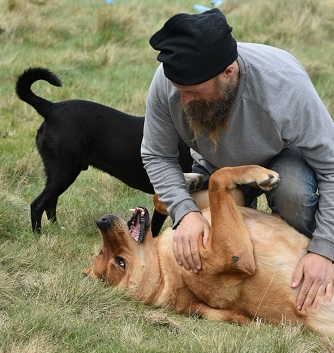

01 / NUESTROS VALORES
¿Qué es Santuario Pepis?
Somos un grupo de personas (y animales) que queremos cambiar el mundo. Nada nuevo por aquí, en mayor o menor medida se que somos muchas las personas con este deseo. Obviamente una cosa es desear o fantasear y otra cosa es llevarlo a cabo.
Piensa a nivel global pero actua localmente.